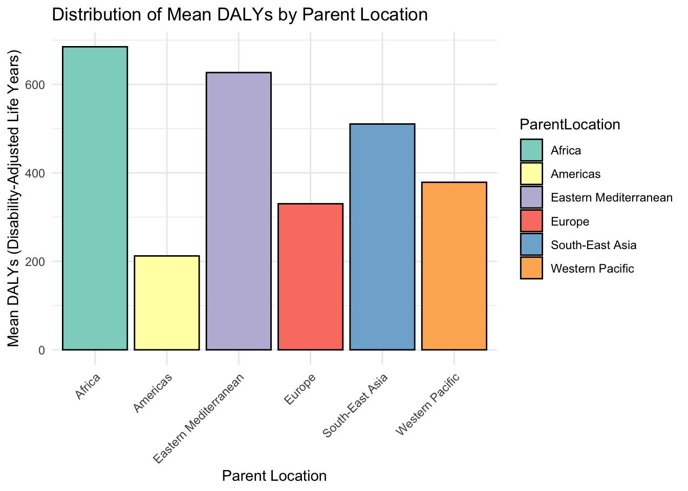
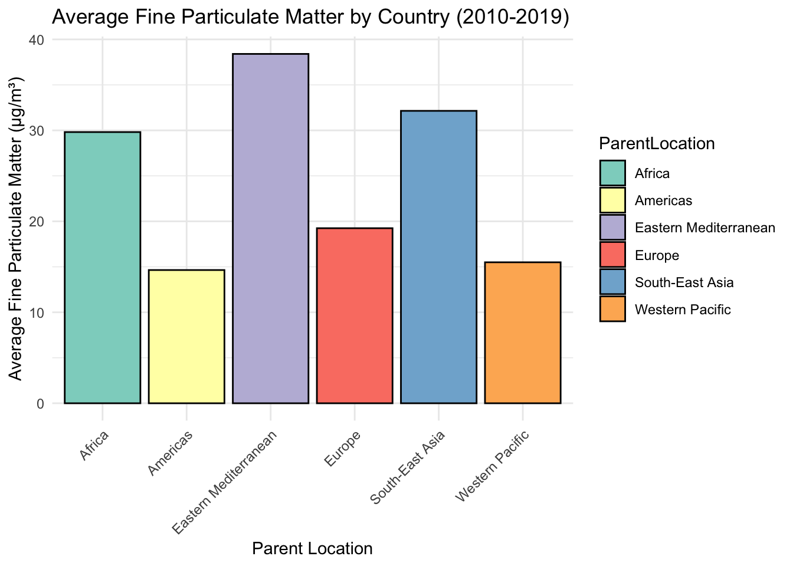

World Health Organization (WHO): Ambient air pollution attributable death rate (per 100,000 population, age-standardized) : https://www.who.int/data/gho/data/indicators/indicator-details/GHO/ambient-air-pollution-attributable-death-rate-(per-100-000-population-age-standardized)
World Health Organization (WHO): Ambient air pollution attributable DALYs (per 100,000 population, age-standardized) : https://www.who.int/data/gho/data/indicators/indicator-details/GHO/ambient-air-pollution-attributable-dalys-(per-100-000-population-age-standardized)
World Bank : GDP per capita (current US$): https://data.worldbank.org/indicator/NY.GDP.PCAP.CD
World Health Organization (WHO): Ambient air pollution, Concentrations of fine particulate matter (PM2.5) per country : https://apps.who.int/gho/data/view.main.SDGPM25116v
World Health Organization (WHO) :
The World Health Organization (WHO) is a global leader in the production and dissemination of reliable, standardized health-related data. As the health arm of the United Nations, WHO collaborates with 194 member states to collect, validate, and analyze health statistics, ensuring consistency and accuracy across diverse regions and health systems. Through its Global Health Observatory (GHO), WHO offers an extensive repository of data on key health indicators, including life expectancy, maternal and child health, disease prevalence, vaccination coverage, and environmental factors like air and water quality. These datasets are critical for monitoring global health trends, assessing progress toward the Sustainable Development Goals (SDGs), and identifying inequalities in health outcomes.
The credibility of WHO’s data lies in its robust methodologies, strong partnerships, and commitment to transparency. The organization collaborates with governments, academic institutions, and international agencies to harmonize data collection processes, and it employs rigorous validation techniques to ensure accuracy. WHO updates its datasets regularly, making them a trusted resource for policymakers, researchers, and public health practitioners. Its annual reports, such as the “World Health Statistics,” synthesize complex datasets into actionable insights, enabling stakeholders to address urgent health challenges and implement evidence-based solutions. By providing reliable, accessible, and actionable data, WHO empowers countries to make informed decisions that improve global health outcomes and reduce inequities.
World Bank :
The World Bank is a leading authority in the creation and provision of reliable, high-quality economic and development data, playing a critical role in global policymaking and research. As part of its mission to reduce poverty and promote sustainable development, the World Bank collects and analyzes data from over 200 countries, covering areas such as GDP, poverty rates, education, healthcare access, and infrastructure. This data is freely accessible through the World Bank Open Data platform, which ensures that stakeholders worldwide have access to the information needed to drive evidence-based decisions.
Among its most renowned resources is the World Development Indicators (WDI) database, which consolidates extensive datasets into a single, comprehensive tool for understanding global development trends. Other specialized datasets focus on issues like financial inclusion, gender equity, and climate change, offering granular insights that inform targeted interventions. The World Bank maintains strong partnerships with national statistical offices, academic institutions, and international organizations to ensure the reliability, timeliness, and relevance of its data. It employs standardized methodologies and advanced analytics to produce data that is consistent across countries and regions. By making these datasets publicly available, the World Bank not only enhances transparency and accountability but also fosters global collaboration to address pressing challenges, including poverty reduction, economic inequality, and climate resilience. Its commitment to providing robust, accessible data positions the institution as a vital resource for researchers, governments, and development agencies striving to build a better future.
Presentation of the project
We have decided to test the environmental Kuznet’s curve theory. The idea is that a country will pollute a lot for a while in order to develop, and then reach a sufficient level of economic development to decrease its carbon dioxyde emissions. We would then get an inverted u shaped line in the plan (GDP per capita, pollution).
We wish to very the empirical accuracy of this theory, both by regions and periods of times. Does is apply to different economical structures ? Does it apply at any time over the years ?
We will then consider the subject around a more human matter. Pollution to the cost of a population’s health : an impact on GDP ? And if so, can we quantify it ?
Loading the datasets
library(tidyr)
Warning: le package 'tidyr' a été compilé avec la version R 4.3.3
library(vroom)
Warning: le package 'vroom' a été compilé avec la version R 4.3.3
DALYs <- vroom::vroom("DALYs.csv")
Rows: 32940 Columns: 34
── Column specification ────────────────────────────────────────────────────────
Delimiter: ","
chr (17): IndicatorCode, Indicator, ValueType, ParentLocationCode, ParentLo...
dbl (4): Period, FactValueNumeric, FactValueNumericLow, FactValueNumericHigh
lgl (12): IsLatestYear, Dim3 type, Dim3, Dim3ValueCode, DataSourceDimValueC...
dttm (1): DateModified
ℹ Use `spec()` to retrieve the full column specification for this data.
ℹ Specify the column types or set `show_col_types = FALSE` to quiet this message.
New names:
Rows: 268 Columns: 3
── Column specification
──────────────────────────────────────────────────────── Delimiter: "," chr
(3): Data Source, World Development Indicators, ...3
ℹ Use `spec()` to retrieve the full column specification for this data. ℹ
Specify the column types or set `show_col_types = FALSE` to quiet this message.
• `` -> `...3`
Data cleaning
GDP per capita
By trying to get the column names of this dataset, we observed that it did not load properly. There were the first four row of the Excel sheet presenting the data, hence compromising the understanding of the separator “,”. We removed the first four rows that did not contain any data and got a proper dataset to work with.
New names:
Rows: 266 Columns: 69
── Column specification
──────────────────────────────────────────────────────── Delimiter: "," chr
(4): Country Name, Country Code, Indicator Name, Indicator Code dbl (64): 1960,
1961, 1962, 1963, 1964, 1965, 1966, 1967, 1968, 1969, 1970, ... lgl (1): ...69
ℹ Use `spec()` to retrieve the full column specification for this data. ℹ
Specify the column types or set `show_col_types = FALSE` to quiet this message.
• `` -> `...69`
DALYs
This dataset is hard to work with in the sense that the columns have non explicit names. hence the following changes.
library(dplyr)
Warning: le package 'dplyr' a été compilé avec la version R 4.3.3
Attachement du package : 'dplyr'
Les objets suivants sont masqués depuis 'package:stats':
filter, lag
Les objets suivants sont masqués depuis 'package:base':
intersect, setdiff, setequal, union
DALYs <- DALYs %>%rename(Mean_Value = FactValueNumeric,lowest_value = FactValueNumericLow,highest_value = FactValueNumericHigh,Sex = Dim1,Country = Location )
Death air pollution and SDG
The observations are the same as for DALYs, hence the following changes.
To answer our research question, we will need data around pollution, GDP per capita and health. To this end, we will be working with databases from the World Health Organization, and the World Bank.
References are listed in the appendix.
DALYs
This aggregated indicator is extracted from the World Health Organization database. It is described as follows : “DALYs for a disease or health condition are the sum of the years of life lost to due to premature mortality (YLLs) and the years lived with a disability (YLDs) due to prevalent cases of the disease or health condition in a population”. We will mostly use the variable cross countries, classified into regions (Africa, Eastern Europe, Asia, North and South America), by sex (male/female), by year (2010 to 2019) and by cause of death (cancer, trachea etc.). This will allow us to evaluate possible external factors, such as armed conflicts, that might have had an impact on spoecific regions during a specific year.
This dataset will then be compared to pollution to answer our final sub research question : can a country observe long term growth while polluting despite the negative externalities in terms of health ?
head(DALYs)
# A tibble: 6 × 34
IndicatorCode Indicator ValueType ParentLocationCode ParentLocation
<chr> <chr> <chr> <chr> <chr>
1 AIR_90 Ambient air polluti… numeric AFR Africa
2 AIR_90 Ambient air polluti… numeric AFR Africa
3 AIR_90 Ambient air polluti… numeric AFR Africa
4 AIR_90 Ambient air polluti… numeric AFR Africa
5 AIR_90 Ambient air polluti… numeric AFR Africa
6 AIR_90 Ambient air polluti… numeric AMR Americas
# ℹ 29 more variables: `Location type` <chr>, SpatialDimValueCode <chr>,
# Country <chr>, `Period type` <chr>, Period <dbl>, IsLatestYear <lgl>,
# `Dim1 type` <chr>, Sex <chr>, Dim1ValueCode <chr>, `Dim2 type` <chr>,
# Dim2 <chr>, Dim2ValueCode <chr>, `Dim3 type` <lgl>, Dim3 <lgl>,
# Dim3ValueCode <lgl>, DataSourceDimValueCode <lgl>, DataSource <lgl>,
# FactValueNumericPrefix <lgl>, Mean_Value <dbl>, FactValueUoM <lgl>,
# FactValueNumericLowPrefix <lgl>, lowest_value <dbl>, …
summary(DALYs)
IndicatorCode Indicator ValueType ParentLocationCode
Length:32940 Length:32940 Length:32940 Length:32940
Class :character Class :character Class :character Class :character
Mode :character Mode :character Mode :character Mode :character
ParentLocation Location type SpatialDimValueCode Country
Length:32940 Length:32940 Length:32940 Length:32940
Class :character Class :character Class :character Class :character
Mode :character Mode :character Mode :character Mode :character
Period type Period IsLatestYear Dim1 type
Length:32940 Min. :2010 Mode :logical Length:32940
Class :character 1st Qu.:2012 FALSE:29646 Class :character
Mode :character Median :2014 TRUE :3294 Mode :character
Mean :2014
3rd Qu.:2017
Max. :2019
Sex Dim1ValueCode Dim2 type Dim2
Length:32940 Length:32940 Length:32940 Length:32940
Class :character Class :character Class :character Class :character
Mode :character Mode :character Mode :character Mode :character
Dim2ValueCode Dim3 type Dim3 Dim3ValueCode
Length:32940 Mode:logical Mode:logical Mode:logical
Class :character NA's:32940 NA's:32940 NA's:32940
Mode :character
DataSourceDimValueCode DataSource FactValueNumericPrefix
Mode:logical Mode:logical Mode:logical
NA's:32940 NA's:32940 NA's:32940
Mean_Value FactValueUoM FactValueNumericLowPrefix lowest_value
Min. : 0.061 Mode:logical Mode:logical Min. : 0.00
1st Qu.: 52.150 NA's:32940 NA's:32940 1st Qu.: 14.87
Median : 187.100 Median : 75.00
Mean : 450.487 Mean : 257.82
3rd Qu.: 554.300 3rd Qu.: 288.23
Max. :4981.000 Max. :3949.00
FactValueNumericHighPrefix highest_value Value
Mode:logical Min. : 0.13 Length:32940
NA's:32940 1st Qu.: 96.76 Class :character
Median : 310.70 Mode :character
Mean : 660.89
3rd Qu.: 815.10
Max. :7738.00
FactValueTranslationID FactComments Language
Mode:logical Mode:logical Length:32940
NA's:32940 NA's:32940 Class :character
Mode :character
DateModified
Min. :2024-10-02 22:00:00
1st Qu.:2024-10-02 22:00:00
Median :2024-10-02 22:00:00
Mean :2024-10-02 22:00:00
3rd Qu.:2024-10-02 22:00:00
Max. :2024-10-02 22:00:00
library(ggplot2)
Warning: le package 'ggplot2' a été compilé avec la version R 4.3.3
# Grouping mean over time per countryDALYs_unique <- DALYs %>%group_by(ParentLocation) %>%summarise(Mean_Value =mean(Mean_Value))# Graphical representationggplot(data = DALYs_unique, aes(x = ParentLocation, y = Mean_Value, group =1)) +geom_line()

When we group the mean of DALYs values obver time per country, we get a rather interesting picture of the situation cross regions. It seems DAILYs are prevazlent in Africa, Eastern Mediterranea and South East Asia. This will allow us to define control groups and to consider levels of development compared to DALYs.
Death air pollution
This data set will be used to complete DALYs. It also comes from the World Health Organization and is organized with the same categories and classifications. It will allow us to get a more precise analysis on the effect of carbone emissions on health.
head(death_air_pollution)
# A tibble: 6 × 34
IndicatorCode Indicator ValueType ParentLocationCode ParentLocation
<chr> <chr> <chr> <chr> <chr>
1 AIR_41 Ambient air polluti… numeric AMR Americas
2 AIR_41 Ambient air polluti… numeric AMR Americas
3 AIR_41 Ambient air polluti… numeric AMR Americas
4 AIR_41 Ambient air polluti… numeric AMR Americas
5 AIR_41 Ambient air polluti… numeric AFR Africa
6 AIR_41 Ambient air polluti… numeric AFR Africa
# ℹ 29 more variables: `Location type` <chr>, SpatialDimValueCode <chr>,
# Country <chr>, `Period type` <chr>, Period <dbl>, IsLatestYear <lgl>,
# `Dim1 type` <chr>, Sex <chr>, Dim1ValueCode <chr>, `Dim2 type` <chr>,
# Dim2 <chr>, Dim2ValueCode <chr>, `Dim3 type` <lgl>, Dim3 <lgl>,
# Dim3ValueCode <lgl>, DataSourceDimValueCode <lgl>, DataSource <lgl>,
# FactValueNumericPrefix <lgl>, Mean_Value <dbl>, FactValueUoM <lgl>,
# FactValueNumericLowPrefix <lgl>, lowest_value <dbl>, …
summary(death_air_pollution)
IndicatorCode Indicator ValueType ParentLocationCode
Length:32940 Length:32940 Length:32940 Length:32940
Class :character Class :character Class :character Class :character
Mode :character Mode :character Mode :character Mode :character
ParentLocation Location type SpatialDimValueCode Country
Length:32940 Length:32940 Length:32940 Length:32940
Class :character Class :character Class :character Class :character
Mode :character Mode :character Mode :character Mode :character
Period type Period IsLatestYear Dim1 type
Length:32940 Min. :2010 Mode :logical Length:32940
Class :character 1st Qu.:2012 FALSE:29646 Class :character
Mode :character Median :2014 TRUE :3294 Mode :character
Mean :2014
3rd Qu.:2017
Max. :2019
Sex Dim1ValueCode Dim2 type Dim2
Length:32940 Length:32940 Length:32940 Length:32940
Class :character Class :character Class :character Class :character
Mode :character Mode :character Mode :character Mode :character
Dim2ValueCode Dim3 type Dim3 Dim3ValueCode
Length:32940 Mode:logical Mode:logical Mode:logical
Class :character NA's:32940 NA's:32940 NA's:32940
Mode :character
DataSourceDimValueCode DataSource FactValueNumericPrefix
Mode:logical Mode:logical Mode:logical
NA's:32940 NA's:32940 NA's:32940
Mean_Value FactValueUoM FactValueNumericLowPrefix
Min. : 0.0 Mode:logical Mode:logical
1st Qu.: 52.0 NA's:32940 NA's:32940
Median : 354.8
Mean : 5121.4
3rd Qu.: 1850.0
Max. :1326431.0
lowest_value FactValueNumericHighPrefix highest_value
Min. : 0.0 Mode:logical Min. : 0.0
1st Qu.: 17.2 NA's:32940 1st Qu.: 93.0
Median : 154.9 Median : 581.7
Mean : 3393.6 Mean : 7018.0
3rd Qu.: 965.8 3rd Qu.: 2793.2
Max. :1051895.0 Max. :1650242.0
Value FactValueTranslationID FactComments Language
Length:32940 Mode:logical Mode:logical Length:32940
Class :character NA's:32940 NA's:32940 Class :character
Mode :character Mode :character
DateModified
Min. :2024-10-02 22:00:00
1st Qu.:2024-10-02 22:00:00
Median :2024-10-02 22:00:00
Mean :2024-10-02 22:00:00
3rd Qu.:2024-10-02 22:00:00
Max. :2024-10-02 22:00:00
library(ggplot2)# Grouping mean over time per countrydeath_air_pollution_unique <- death_air_pollution %>%group_by(ParentLocation) %>%summarise(Mean_Value =mean(Mean_Value))# Graphical representationggplot(data = death_air_pollution_unique, aes(x = ParentLocation, y = Mean_Value, group =1)) +geom_line()
Here it seems deaths due to air pollution is prevalent in South East Asia and Western Pacific.
SDG
This dataset includes the measurement of fine particulate matter, that is to say the concentration of toxic elements in the air. Again, since the dataset comes from the World Health organization, the classification remains the same. It will allow us to get a cross country analysis, from 2010 to 2019. We will compare the degree to which some regions are polluted and their GDP over the year.
head(SDG)
# A tibble: 6 × 34
IndicatorCode Indicator ValueType ParentLocationCode ParentLocation
<chr> <chr> <chr> <chr> <chr>
1 SDGPM25 Concentrations of f… text AFR Africa
2 SDGPM25 Concentrations of f… text AMR Americas
3 SDGPM25 Concentrations of f… text EUR Europe
4 SDGPM25 Concentrations of f… text AMR Americas
5 SDGPM25 Concentrations of f… text AMR Americas
6 SDGPM25 Concentrations of f… text EUR Europe
# ℹ 29 more variables: `Location type` <chr>, SpatialDimValueCode <chr>,
# Country <chr>, `Period type` <chr>, Period <dbl>, IsLatestYear <lgl>,
# `Dim1 type` <chr>, Sex <chr>, Dim1ValueCode <chr>, `Dim2 type` <lgl>,
# Dim2 <lgl>, Dim2ValueCode <lgl>, `Dim3 type` <lgl>, Dim3 <lgl>,
# Dim3ValueCode <lgl>, DataSourceDimValueCode <lgl>, DataSource <lgl>,
# FactValueNumericPrefix <lgl>, Mean_Value <dbl>, FactValueUoM <lgl>,
# FactValueNumericLowPrefix <lgl>, lowest_value <dbl>, …
summary(SDG)
IndicatorCode Indicator ValueType ParentLocationCode
Length:9450 Length:9450 Length:9450 Length:9450
Class :character Class :character Class :character Class :character
Mode :character Mode :character Mode :character Mode :character
ParentLocation Location type SpatialDimValueCode Country
Length:9450 Length:9450 Length:9450 Length:9450
Class :character Class :character Class :character Class :character
Mode :character Mode :character Mode :character Mode :character
Period type Period IsLatestYear Dim1 type
Length:9450 Min. :2010 Mode :logical Length:9450
Class :character 1st Qu.:2012 FALSE:8505 Class :character
Mode :character Median :2014 TRUE :945 Mode :character
Mean :2014
3rd Qu.:2017
Max. :2019
Sex Dim1ValueCode Dim2 type Dim2
Length:9450 Length:9450 Mode:logical Mode:logical
Class :character Class :character NA's:9450 NA's:9450
Mode :character Mode :character
Dim2ValueCode Dim3 type Dim3 Dim3ValueCode
Mode:logical Mode:logical Mode:logical Mode:logical
NA's:9450 NA's:9450 NA's:9450 NA's:9450
DataSourceDimValueCode DataSource FactValueNumericPrefix Mean_Value
Mode:logical Mode:logical Mode:logical Min. : 4.59
NA's:9450 NA's:9450 NA's:9450 1st Qu.:11.92
Median :19.57
Mean :23.54
3rd Qu.:30.98
Max. :97.49
FactValueUoM FactValueNumericLowPrefix lowest_value
Mode:logical Mode:logical Min. : 1.41
NA's:9450 NA's:9450 1st Qu.: 7.85
Median :13.79
Mean :16.23
3rd Qu.:20.34
Max. :70.24
FactValueNumericHighPrefix highest_value Value
Mode:logical Min. : 5.26 Length:9450
NA's:9450 1st Qu.: 15.95 Class :character
Median : 24.48 Mode :character
Mean : 35.48
3rd Qu.: 49.69
Max. :175.60
FactValueTranslationID FactComments Language
Mode:logical Mode:logical Length:9450
NA's:9450 NA's:9450 Class :character
Mode :character
DateModified
Min. :2022-08-11 22:00:00
1st Qu.:2022-08-11 22:00:00
Median :2022-08-11 22:00:00
Mean :2022-08-11 22:00:00
3rd Qu.:2022-08-11 22:00:00
Max. :2022-08-11 22:00:00
library(ggplot2)# Grouping mean over time per countrySDG_unique <- SDG %>%group_by(ParentLocation) %>%summarise(Mean_Value =mean(Mean_Value))# Graphical representationggplot(data = SDG_unique, aes(x = ParentLocation, y = Mean_Value, group =1)) +geom_line()

The pattern here is quite similar to DALYs. SDG is prevalent in Africa, Eastern Mediterrenea and South East Asia.
GDP per capita
GDP (Gross domestic product) is obtained with the following macroeconomics formula : GDP=C+I+G+(X−M) That is to say the aggregation of consumption (C), investments (I), government spendings (G) and the commercial balance (exportations minus importations). GDP per capita is the previous aggregate divided by the population size. Thiw choice will allow us to correct for countries size bias.
GDP will be our wealth indicator in the simulation of the Kuznet’s environmental curve.
head(GDP_per_capita_cleaned)
# A tibble: 6 × 69
`Country Name` `Country Code` `Indicator Name` `Indicator Code` `1960` `1961`
<chr> <chr> <chr> <chr> <dbl> <dbl>
1 Aruba ABW GDP per capita … NY.GDP.PCAP.CD NA NA
2 Africa Eastern… AFE GDP per capita … NY.GDP.PCAP.CD 162. 166.
3 Afghanistan AFG GDP per capita … NY.GDP.PCAP.CD NA NA
4 Africa Western… AFW GDP per capita … NY.GDP.PCAP.CD 122. 128.
5 Angola AGO GDP per capita … NY.GDP.PCAP.CD NA NA
6 Albania ALB GDP per capita … NY.GDP.PCAP.CD NA NA
# ℹ 63 more variables: `1962` <dbl>, `1963` <dbl>, `1964` <dbl>, `1965` <dbl>,
# `1966` <dbl>, `1967` <dbl>, `1968` <dbl>, `1969` <dbl>, `1970` <dbl>,
# `1971` <dbl>, `1972` <dbl>, `1973` <dbl>, `1974` <dbl>, `1975` <dbl>,
# `1976` <dbl>, `1977` <dbl>, `1978` <dbl>, `1979` <dbl>, `1980` <dbl>,
# `1981` <dbl>, `1982` <dbl>, `1983` <dbl>, `1984` <dbl>, `1985` <dbl>,
# `1986` <dbl>, `1987` <dbl>, `1988` <dbl>, `1989` <dbl>, `1990` <dbl>,
# `1991` <dbl>, `1992` <dbl>, `1993` <dbl>, `1994` <dbl>, `1995` <dbl>, …
summary(GDP_per_capita_cleaned)
Country Name Country Code Indicator Name Indicator Code
Length:266 Length:266 Length:266 Length:266
Class :character Class :character Class :character Class :character
Mode :character Mode :character Mode :character Mode :character
1960 1961 1962 1963
Min. : 25.1 Min. : 27.27 Min. : 27.95 Min. : 25.81
1st Qu.: 116.3 1st Qu.: 121.19 1st Qu.: 126.23 1st Qu.: 130.84
Median : 217.6 Median : 202.92 Median : 206.58 Median : 218.86
Mean : 489.3 Mean : 505.31 Mean : 556.33 Mean : 588.84
3rd Qu.: 507.7 3rd Qu.: 571.43 3rd Qu.: 628.69 3rd Qu.: 632.28
Max. :2999.9 Max. :3059.16 Max. :4833.83 Max. :4520.62
NA's :128 NA's :124 NA's :122 NA's :122
1964 1965 1966 1967
Min. : 17.33 Min. : 15.11 Min. : 11.79 Min. : 16.52
1st Qu.: 138.25 1st Qu.: 146.09 1st Qu.: 155.36 1st Qu.: 156.71
Median : 237.91 Median : 264.11 Median : 267.33 Median : 273.87
Mean : 638.10 Mean : 681.93 Mean : 726.14 Mean : 745.96
3rd Qu.: 752.06 3rd Qu.: 851.92 3rd Qu.: 896.74 3rd Qu.: 870.34
Max. :4448.05 Max. :4081.42 Max. :4228.74 Max. :4325.96
NA's :122 NA's :112 NA's :111 NA's :108
1968 1969 1970 1971
Min. : 21.5 Min. : 21.45 Min. : 20.66 Min. : 21.04
1st Qu.: 163.4 1st Qu.: 169.63 1st Qu.: 205.22 1st Qu.: 209.13
Median : 294.8 Median : 297.20 Median : 349.02 Median : 375.48
Mean : 777.8 Mean : 842.12 Mean : 1015.76 Mean : 1117.18
3rd Qu.: 876.9 3rd Qu.: 910.65 3rd Qu.: 1342.99 3rd Qu.: 1408.89
Max. :4684.6 Max. :5020.00 Max. :12077.76 Max. :13315.98
NA's :107 NA's :107 NA's :85 NA's :84
1972 1973 1974 1975
Min. : 23.19 Min. : 24.68 Min. : 41.19 Min. : 34.97
1st Qu.: 226.59 1st Qu.: 273.43 1st Qu.: 327.32 1st Qu.: 362.90
Median : 420.81 Median : 538.96 Median : 694.98 Median : 719.72
Mean : 1298.34 Mean : 1650.70 Mean : 2148.70 Mean : 2325.55
3rd Qu.: 1810.38 3rd Qu.: 2307.85 3rd Qu.: 2613.70 3rd Qu.: 2968.36
Max. :16169.87 Max. :20857.06 Max. :23684.09 Max. :27894.49
NA's :84 NA's :84 NA's :84 NA's :80
1976 1977 1978 1979
Min. : 38.94 Min. : 27.68 Min. : 29.06 Min. : 29.01
1st Qu.: 388.88 1st Qu.: 435.39 1st Qu.: 487.56 1st Qu.: 540.44
Median : 741.12 Median : 854.99 Median : 1009.22 Median : 1139.15
Mean : 2528.92 Mean : 2772.03 Mean : 3141.96 Mean : 3721.80
3rd Qu.: 3113.34 3rd Qu.: 3427.07 3rd Qu.: 3884.50 3rd Qu.: 4569.48
Max. :31282.77 Max. :35186.23 Max. :37681.44 Max. :45087.21
NA's :80 NA's :77 NA's :78 NA's :77
1980 1981 1982 1983
Min. : 31.02 Min. : 32.57 Min. : 42.63 Min. : 39.0
1st Qu.: 581.33 1st Qu.: 631.42 1st Qu.: 613.69 1st Qu.: 578.3
Median : 1254.66 Median : 1316.31 Median : 1282.38 Median : 1314.2
Mean : 4196.99 Mean : 4071.23 Mean : 3887.92 Mean : 3751.0
3rd Qu.: 5700.43 3rd Qu.: 5315.13 3rd Qu.: 5126.18 3rd Qu.: 4818.7
Max. :50900.26 Max. :44841.23 Max. :41461.45 Max. :39040.9
NA's :69 NA's :68 NA's :66 NA's :65
1984 1985 1986 1987
Min. : 36.06 Min. : 40.1 Min. : 42.13 Min. : 0.0
1st Qu.: 556.75 1st Qu.: 534.6 1st Qu.: 528.20 1st Qu.: 565.7
Median : 1245.93 Median : 1189.9 Median : 1257.39 Median : 1369.7
Mean : 3683.07 Mean : 3670.8 Mean : 4242.01 Mean : 4787.5
3rd Qu.: 4784.21 3rd Qu.: 4734.4 3rd Qu.: 5642.63 3rd Qu.: 5562.8
Max. :36516.69 Max. :37590.4 Max. :51943.19 Max. :62341.7
NA's :63 NA's :61 NA's :61 NA's :54
1988 1989 1990 1991
Min. : 0.0 Min. : 0.0 Min. : 52.75 Min. : 22.85
1st Qu.: 568.5 1st Qu.: 578.1 1st Qu.: 651.48 1st Qu.: 635.11
Median : 1311.0 Median : 1410.7 Median : 1553.56 Median : 1483.10
Mean : 5150.7 Mean : 5218.0 Mean : 5792.62 Mean : 5830.17
3rd Qu.: 5860.3 3rd Qu.: 6044.6 3rd Qu.: 6509.06 3rd Qu.: 6191.52
Max. :67133.2 Max. :66829.0 Max. :81813.02 Max. :81158.91
NA's :50 NA's :46 NA's :30 NA's :30
1992 1993 1994 1995
Min. : 30.11 Min. : 53.48 Min. : 62.21 Min. : 62.92
1st Qu.: 573.39 1st Qu.: 565.80 1st Qu.: 586.71 1st Qu.: 681.82
Median : 1417.17 Median : 1450.28 Median : 1505.48 Median : 1940.03
Mean : 6089.03 Mean : 5861.34 Mean : 6207.01 Mean : 6999.50
3rd Qu.: 6533.53 3rd Qu.: 6241.10 3rd Qu.: 6283.81 3rd Qu.: 6692.55
Max. :88882.55 Max. :82983.96 Max. :87042.27 Max. :99431.74
NA's :27 NA's :23 NA's :22 NA's :19
1996 1997 1998 1999
Min. : 72.32 Min. : 107.4 Min. : 126.9 Min. : 99.76
1st Qu.: 723.60 1st Qu.: 730.4 1st Qu.: 702.4 1st Qu.: 617.96
Median : 1954.66 Median : 1889.0 Median : 1871.8 Median : 1821.99
Mean : 7221.53 Mean : 7098.2 Mean : 7240.6 Mean : 7533.10
3rd Qu.: 6958.74 3rd Qu.: 7566.6 3rd Qu.: 7780.7 3rd Qu.: 7633.20
Max. :98927.68 Max. :88844.9 Max. :91111.0 Max. :89742.50
NA's :19 NA's :19 NA's :17 NA's :16
2000 2001 2002 2003
Min. : 123.0 Min. : 119.3 Min. : 110.5 Min. : 114.4
1st Qu.: 638.2 1st Qu.: 626.7 1st Qu.: 694.2 1st Qu.: 773.0
Median : 1806.7 Median : 1860.6 Median : 2092.1 Median : 2373.1
Mean : 7511.5 Mean : 7518.1 Mean : 8116.0 Mean : 9338.8
3rd Qu.: 7865.1 3rd Qu.: 8162.9 3rd Qu.: 9247.8 3rd Qu.: 9893.9
Max. :81763.8 Max. :82410.4 Max. :90151.6 Max. :111309.9
NA's :15 NA's :14 NA's :10 NA's :10
2004 2005 2006 2007
Min. : 128.5 Min. : 151.2 Min. : 166.3 Min. : 170.7
1st Qu.: 934.5 1st Qu.: 1079.2 1st Qu.: 1237.9 1st Qu.: 1379.8
Median : 2822.9 Median : 3237.4 Median : 3736.2 Median : 4394.5
Mean : 10641.1 Mean : 11523.9 Mean : 12874.9 Mean : 14667.2
3rd Qu.: 11138.7 3rd Qu.: 13438.7 3rd Qu.: 14986.4 3rd Qu.: 16744.6
Max. :125435.9 Max. :130819.0 Max. :143289.1 Max. :184639.8
NA's :10 NA's :10 NA's :9 NA's :9
2008 2009 2010 2011
Min. : 194.7 Min. : 204.5 Min. : 222.7 Min. : 236.4
1st Qu.: 1550.7 1st Qu.: 1432.1 1st Qu.: 1648.1 1st Qu.: 1861.5
Median : 5039.9 Median : 4744.1 Median : 5337.3 Median : 6106.0
Mean : 15718.2 Mean : 14044.4 Mean : 14751.8 Mean : 16272.4
3rd Qu.: 18897.0 3rd Qu.: 16359.4 3rd Qu.: 16487.5 3rd Qu.: 19426.3
Max. :204097.1 Max. :168957.1 Max. :161780.8 Max. :179369.3
NA's :8 NA's :8 NA's :8 NA's :5
2012 2013 2014 2015
Min. : 238.2 Min. : 241.6 Min. : 257.8 Min. : 289.4
1st Qu.: 1902.1 1st Qu.: 2083.4 1st Qu.: 2158.9 1st Qu.: 2001.7
Median : 6441.9 Median : 6755.1 Median : 6904.6 Median : 6192.5
Mean : 16164.6 Mean : 16745.4 Mean : 17075.3 Mean : 15440.5
3rd Qu.: 19459.9 3rd Qu.: 19824.3 3rd Qu.: 20314.2 3rd Qu.: 18210.4
Max. :165497.1 Max. :185055.5 Max. :195772.7 Max. :170338.7
NA's :7 NA's :7 NA's :6 NA's :8
2016 2017 2018 2019
Min. : 242.5 Min. : 244.2 Min. : 232.1 Min. : 217
1st Qu.: 2019.3 1st Qu.: 2041.9 1st Qu.: 2202.3 1st Qu.: 2221
Median : 6014.6 Median : 6395.7 Median : 6847.1 Median : 6897
Mean : 15753.1 Mean : 16555.2 Mean : 17539.9 Mean : 17501
3rd Qu.: 18688.8 3rd Qu.: 20264.3 3rd Qu.: 22059.0 3rd Qu.: 22438
Max. :174412.5 Max. :173611.7 Max. :193968.1 Max. :199383
NA's :8 NA's :8 NA's :8 NA's :8
2020 2021 2022 2023
Min. : 216.8 Min. : 221.2 Min. : 259 Min. : 199.6
1st Qu.: 2155.3 1st Qu.: 2404.2 1st Qu.: 2387 1st Qu.: 2308.7
Median : 6198.9 Median : 7240.7 Median : 7634 Median : 7330.0
Mean : 16272.8 Mean : 18718.2 Mean : 18863 Mean : 16484.9
3rd Qu.: 19185.7 3rd Qu.: 22119.5 3rd Qu.: 21176 3rd Qu.: 22147.2
Max. :182537.4 Max. :235132.8 Max. :240862 Max. :128259.4
NA's :9 NA's :10 NA's :16 NA's :33
...69
Mode:logical
NA's:266
library(ggplot2)## Filtering per regionrows_to_keep <-c(182, 216, 231, 232, 237, 241, 260)GDP_per_capita_cleaned_filtered <- GDP_per_capita_cleaned %>%slice(rows_to_keep)## Mean over time per regionmean_values <-rowMeans(GDP_per_capita_cleaned_filtered[, 5:50], na.rm =TRUE)GDP_per_capita_cleaned_filtered$Mean_5_to_50 <- mean_valuesggplot(data = GDP_per_capita_cleaned_filtered, aes(x =`Country Name`, y = Mean_5_to_50)) +geom_line()
`geom_line()`: Each group consists of only one observation.
ℹ Do you need to adjust the group aesthetic?